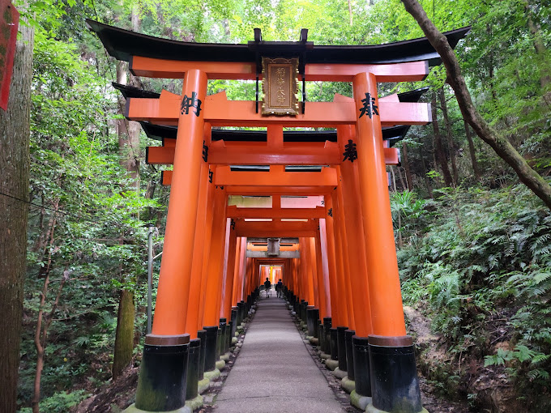
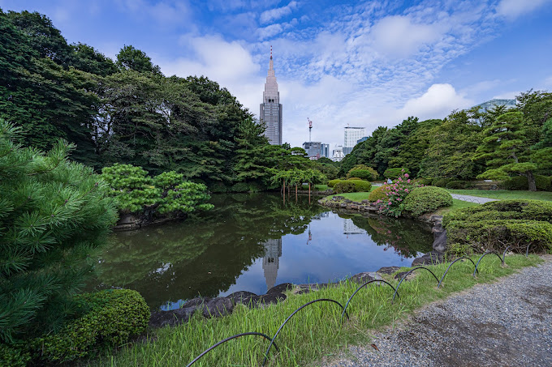
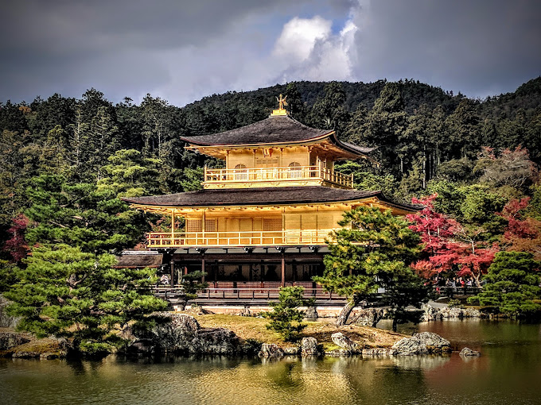

JAPAN

Fushimi Inari Taisha
Fushimi Inari Taisha is a Shinto shrine in Kyoto, Japan. It is seen as the principal residence of the kami Inari, Shinto god of rice and commerce
See More

Shinjuku Gyoen
Shinjuku Gyoen combines three distinct types of gardens—Japanese traditional, formal and landscape—with sprawling lawns and quiet groves.
See More

Kinkakuji
Kinkakuji is a Zen temple in northern Kyoto whose top two floors are completely covered in gold leaf. Formally known as Rokuonji
See More
Mt. Fuji
Japan s Mt. Fuji is an active volcano about 100 kilometers southwest of Tokyo. Commonly called “Fuji-san,” its the country tallest peak, at 3,776 meters.
See More